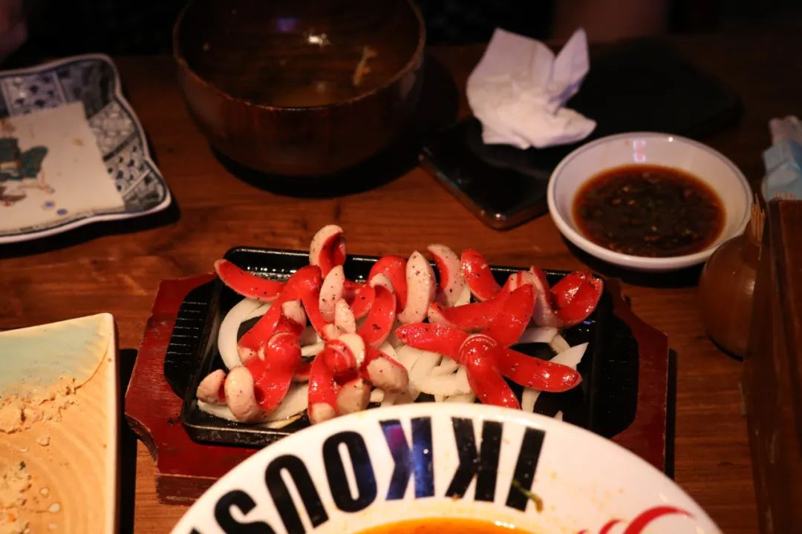

本文是张衔瑜第156篇推文
共计1662个字,104张图
大概一周前发现的时候有被吓到：
我现在出门说长沙话可以轻易在菜市场让人不敢短斤少两，可以在街头巷尾吃小吃的时候呗邀请品尝隐藏菜单。
英语也还可以基本理解无障碍，认读速度也没有下降多少。但是刚刚写邮件的时候，尽管知道表意要用什么单词，可是写不成句子。
写出来就像那种，我公众号里的句子一样，直接翻译成英文之后的版本。像一个只能听话看文的单向翻译机，说成写成英文就全奇奇怪怪的。
上一篇（虽然那已经是两周前了）发出来之后发现少加了一个内容，是在车站路的车头快拍。
最近有常常在路上骑车跑来跑去，车头的视角也真的很适合做vlog这样。不过后来发现实在有很难把相机固定在车头，定频的抖动完全没法去控制。而人体工学则对此抗逆性很高。
路灯。
路灯是人间的银河；
人间的银河是路灯。
下过雨的晚上，在路上看所有的车辆堵成一片。约莫是一种人生快乐。


找时间去了一趟风评很好的仙峰面包店。
店很离谱，开在7天酒店的楼上。拍了一段从万家丽这边一路上吃到这家面包。自己探店的节奏有很轻松。


刘百味
如果作为开在家楼下的店，去吃吃倒也还可以。店家看我举起了相机，说下次过来再请我几个凉菜。事实上这里走一会儿就到我的小学了。不知道为什么以前竟然都没有吃过这家。吃完之后觉得是可以理解的，毕竟能做到这个味道的多了去了。


评价一个吃的，仅仅用好吃/不好吃来评价，未免过于粗暴了些。
评价首先得找一个标准体系，人在湘菜区测评湘菜 又或去探一家淮扬菜店然后用淮扬菜的标准。不同的菜系是当地居民和这里的山川草木虫鱼鸟兽相适应之后，寻找到最平衡自然的存盘点。
山川异域，用适应本地已经臻至化境的风味习惯去评价另一处，那囿于成见的程度也太深了一点。
刘百味，还有我底下要说的虾小龙。每一道菜不管拿到哪个湘菜系的标准里，我都会说一声这没错、挺不错。


但是这不能理解为很好或者是很惊艳。就是还行的那种，还行。
不然每每出门吃饭都要震惊好多次，我能想到的可能性就只有：吃不多所以真的很震惊、讨好型人格希望给同伴好印象、Pre-paid或者其他交易下的一种演出。虾小龙也是当不得震惊，但是当得好吃的地方。
话语的先后顺序有一些微妙的差别。不在沉默中爆发，就在沉默中灭亡；不在沉默中灭亡，就在沉默中爆发。说起日暮里，就想起去的这个离谱的木村屋。不管作为湘菜区标准还是日料标准。湘菜区标准由我来捉刀檄文，日料下的评价就请胜利街上的老师傅来评好了。



值得一提的是李易面馆。名不虚传。由是评论区惊现谭黑人的名言“你也喜欢在吃面的时候加点肉吗？”

是的。我在公交新村也喜欢这么加。
易裕和也喜欢这么加


吃了这么多，总得出门。夏天来了，去荷花池（是很多荷花的池塘不是那个很有名的菜市场）很多很多的荷花观赏园和种植基地


鷁首徐回，兼传羽杯。


但是有长枪短炮的大爷就可以不管这些


白天应减光。而到了晚上，人们不得不重新寻找光源。
于是和溯洄拿着仙女棒去了湖边，冷光烟火作为面部的补光和道具。谁能想到这竟然是我摄影良久以来的第一笔耗材。

如果我是酥糖店老板，那么店最好开在天街旁。


装饰的话，在宜家采购一点点。不过主要是买玻璃瓶


这一篇里唯一一张HSL分离色调精修的，大概是这张朋友请我喝的奶茶

后来和朋友（另一位）听说橘子洲涨水了又开园。决定去看看。需要注意的是现在晚上六点开始就要闭园请出游客了。你看西边的落日都到这个份上。


晚上快十點，騎車回家的路上看見一個穿著校服背書包中學男生，坐在那種 普通的連座電動車上。拿著一個金屬的東西，舉到頭邊。很奇怪但也沒有很留心，於是保持速度超車。擦身而過的時候，我才看清那是一個保溫桶，男生正在用勺子舀東西吃。前座大概是他的媽媽或者很熟的阿姨，正慢慢騎車小心而平穩地避開路上的坑坑窪窪
上完五門課。要開學的感覺，也還不是那麼強烈。直到提交了宿舍申訴，今天分了到一間寢室給我。才實實在在感覺到，確實要開學了，專業課和lab也要到了 入境批復也快了
Hobby是取悅自己 一個未來學者的使命，就是推動某一學科人們認知的邊界，做前人沒做過的事情。所以人们在介绍我的时候还是会那么说，而不是精致的情绪疯子
离谱的事情。
散乱


泰迪：“不给打赏就咬噢”